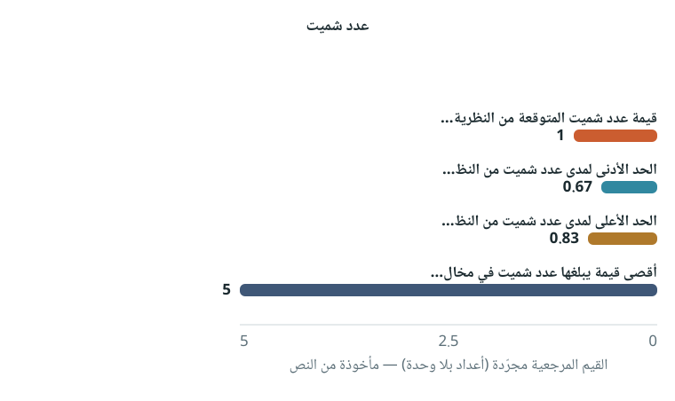

عدد شميت
Schmidt Number
عدد شميت مقدار بلا بُعد يقيس نسبة انتشار الزخم إلى انتشار الكتلة في مائع، فيحدد أيّ العمليتين أسرع في الجريان.
عدد شميت نسبة بلا بُعد بين انتشار الزخم وانتشار الكتلة. يعرّفه تريبال بأنه النسبة بلا بُعد بين الانتشارين، ويكتبه Sc = μ/(ρD)، أي اللزوجة مقسومة على الكثافة مضروبة في معامل الانتشار. ويشرح أن نظرية حركية بسيطة تتوقع أن يكون Sc مساويًا للواحد في الغاز، لأن كلا الانتشارين يُعطى بالتعبير نفسه. لكن نظرية حركية أدق تعطي قيمًا من 0.67 إلى 0.83، وهي بالضبط المدى الذي تُوجد عليه تجريبيًا عند الضغوط المعتدلة. ويضيف أن Sc في مخاليط الغازات الثنائية قد يبلغ 5. ويظهر العدد في تشابه تشيلتون-كولبورن مرفوعًا للأس ثلثين، فهو الذي يحدد مقدار تصحيح نقل الكتلة مقابل نقل الحرارة في الهندسة نفسها.
كيف تعمل الظاهرة؟
عدد شميت يقارن آليتين جزيئيتين تجريان في المائع نفسه: نقل الزخم الذي يحدث بتبادل الجزيئات بين طبقات متحركة بسرعات مختلفة، ونقل الكتلة الذي يحدث بحركة نوع واحد من الجزيئات خلال خليط. وكلا العمليتين يُعطى في النظرية الحركية البسيطة بالتعبير نفسه، ولذلك تتوقع تلك النظرية أن يكون الناتج واحدًا في الغاز. وحين تكبر الجزيئات أو يزيد التركيز، ينفصل الانتشاران ويصير نقل الكتلة أبطأ بكثير، فيكبر العدد.
العلاقة بالأرقام
يكتب تريبال العدد Sc = μ/(ρD)، ويذكر أن النظرية الحركية البسيطة تجعله مساويًا للواحد في الغاز، وأن نظرية أدق تعطي 0.67 إلى 0.83 وهو المدى الموجود تجريبيًا عند الضغوط المعتدلة، وأن مخاليط الغازات الثنائية قد تبلغ فيه 5. ويُعرّف ISO 80000-11 العدد في البند 11-7.2، ويسمي اللزوجة الحركية «انتشار الزخم» وD معامل الانتشار، وهو التعريف نفسه بصيغة معيارية. ويظهر العدد في تشابه تشيلتون-كولبورن مرفوعًا للأس ثلثين.
مفاهيم متقاربة
التمييز الأول عن عدد براندتل: كلاهما يقارن انتشار الزخم بشيء، لكن براندتل يقارنه بانتشار الحرارة وشميت يقارنه بانتشار الكتلة. والتمييز الثاني عن عدد لويس Le = α/D الذي يقارن الحرارة بالكتلة، وهو يساوي براندتل مقسومًا على شميت، فليس بديلًا عنه. والتمييز الثالث عن عدد شيروود: شيروود معامل نقل بلا بُعد يقيس معدل النقل عند السطح، وشميت خاصية مائع تصف نسبة انتشارين داخله، فالأول نتيجة عملية والثاني خاصية مادة.
حدود التطبيق
الحد الأول أن العدد خاصية موضعية تتغير بالحرارة والتركيز، فقيمة واحدة لا تصلح لمدى واسع. والثاني أن مداه في الغازات ضيق نسبيًا، ولذلك يحذر تريبال من أن كثيرًا من البيانات صيغت بعامل jD دون إثبات صحة الأس ثلثين على رقم شميت للحالة، فالتوسيع إلى السوائل يحتاج تحفظًا. والثالث أن النظرية الحركية البسيطة تنجح في الغازات المخففة وتفشل عند التركيز العالي حيث ينفصل الانتشاران.

| الكمية | القيمة | المصدر |
|---|---|---|
| قيمة عدد شميت المتوقعة من النظرية الحركية البسيطة للغاز | 1 — | [1] |
| الحد الأدنى لمدى عدد شميت من النظرية الحركية الأدق | 0.67 — | [1] |
| الحد الأعلى لمدى عدد شميت من النظرية الحركية الأدق | 0.83 — | [1] |
| أقصى قيمة يبلغها عدد شميت في مخاليط الغازات الثنائية | 5 — | [1] |
المصادر
- 1 Mass-Transfer Operations, 3rd ed. — McGraw-Hill (1980). · اطُّلع عليه 2026-11-28
- 2 ISO 80000-11:2019 Quantities and units — Part 11: Characteristic numbers — ISO (International Organization for Standardization) (2019). www.iso.org/standard/64982.html · اطُّلع عليه 2026-11-28
استشهد بهذا المصطلح
الصيغتان مبنيتان من بيانات الصفحة نفسها: العنوان والتاريخ ورابط النسخة المنشورة.
عدد شميت — Schmidt Number. (2026). ديوان المعرفة — انفراد. https://infiradev.com/diwan/terms/term-schmidt-number.html
@misc{term-schmidt-number2026,
title = {عدد شميت},
titleaddon = {Schmidt Number},
howpublished = {{ديوان المعرفة — انفراد} — مرجع علمي عربي},
year = {2026},
url = {https://infiradev.com/diwan/terms/term-schmidt-number.html},
urldate = {2026-11-28},
note = {مراجعة علمية: Abdullah Al-Huwaidi}
}
راجعه: Abdullah Al-Huwaidi · 2026-11-28 · آخر تحديث 2026-11-28